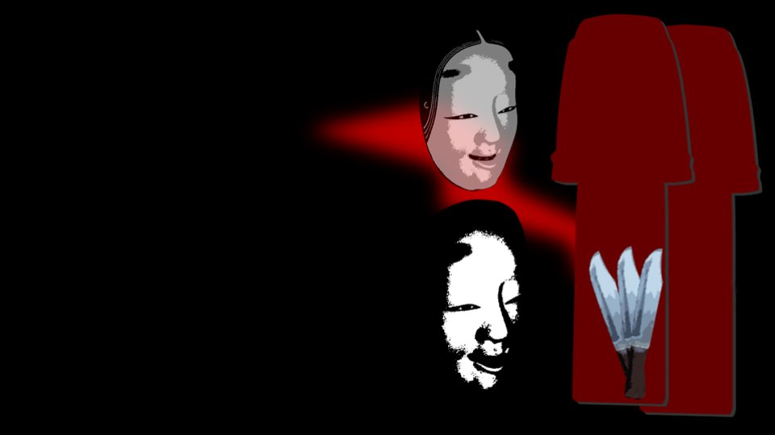

Ambush


"Sorry for waking you up all of a sudden..."
"Eri-nee, what's wrong...?"
"............"
Kana-chan had only just fallen asleep, and Kogori-senpai had been dragged back to reality by waking up.
I'm worried most of all about Kogori-senpai.
Senpai has her parents to think about, and yet I'm trying to make her talk without even letting her rest enough.
"Eri-nee, what's wrong...?"
"............"
Kana-chan had only just fallen asleep, and Kogori-senpai had been dragged back to reality by waking up.
I'm worried most of all about Kogori-senpai.
Senpai has her parents to think about, and yet I'm trying to make her talk without even letting her rest enough.
But I know. Kogori-senpai isn't a weak person.
It's one of the reasons I'm attached to Senpai.
It's one of the reasons I'm attached to Senpai.
"I know this is a bad time, but my head's already at its limit...
So I was hoping I could hear something from the two of you..."
"Mm-hm... I'll try hard for Eri-nee..."
Kana-chan answered, rubbing her eyes.
Kogori-senpai...
"Mm-hm... I'll try hard for Eri-nee..."
Kana-chan answered, rubbing her eyes.
Kogori-senpai...
"Goto...
Let me help too.
I... I really want to catch the culprit!"
Just as I thought, she's exactly the person I believed she was.
It's at times like this that Senpai is strong.
However bad things get, she tries her hardest to do whatever she can right now.
Just as I thought, she's exactly the person I believed she was.
It's at times like this that Senpai is strong.
However bad things get, she tries her hardest to do whatever she can right now.
―Since I was in front of Kana-chan, I avoided the theory that Kotaro-san was the culprit and explained that I would try to approach the culprit through the drug.
Kogori-senpai listened without taking her eyes off me, while Kana-chan wore a look that said she had no idea what I was talking about.
Judging from Kana-chan, maybe not everyone in Arata knows about the drug.
Kogori-senpai listened without taking her eyes off me, while Kana-chan wore a look that said she had no idea what I was talking about.
Judging from Kana-chan, maybe not everyone in Arata knows about the drug.

"Eri-nee, even without a drug like that, I'm strong!"
"No... that's not what I mean. Do you know about that drug?"
"No... that's not what I mean. Do you know about that drug?"

"Hmm...
Feels like I've heard of it...
and like I haven't..."
"Then is there anyone who seems like they might have used a drug like that? Like someone who suddenly got really strong, or who suddenly got faster at running..."
"Then is there anyone who seems like they might have used a drug like that? Like someone who suddenly got really strong, or who suddenly got faster at running..."
"Hmm...
Probably... nobody...
If there was a drug like that, I bet everybody'd use it and go hunting!"
I see. It's true: if something like that existed, they could hunt efficiently even while holding their movements back enough to keep their bodies from breaking.
I judged that Kana-chan was most likely not lying.
I see. It's true: if something like that existed, they could hunt efficiently even while holding their movements back enough to keep their bodies from breaking.
I judged that Kana-chan was most likely not lying.
"Goto, about that: earlier, when we were doing fireworks, Erika-chan said something.
That they used to make some kind of drug in the past, but it's been disposed of now."
If that's true, it means there was a faction that went on making the drug in secret.
Making a drug without anyone finding out would be impossible without at least a few collaborators.
And the drug can't keep for decades either, so they must have been making it somewhere in this settlement.
If that's true, it means there was a faction that went on making the drug in secret.
Making a drug without anyone finding out would be impossible without at least a few collaborators.
And the drug can't keep for decades either, so they must have been making it somewhere in this settlement.

Which means even this small settlement isn't of one mind.
Erika-chan has a faction rebelling against her beneath the surface.
If its leader is Kotaro-san, wouldn't a lot of things start to connect?
Erika-chan has a faction rebelling against her beneath the surface.
If its leader is Kotaro-san, wouldn't a lot of things start to connect?
In other words, the faction that kept making the drug―its mastermind is Kotaro-san...?

No, that's entirely possible.
If they started making the drug again, they would want to test its effects.
Suddenly trying a drug that hadn't been used in decades on their own bodies isn't something they could easily do.
What the Megasawa affair really was, then, was a drug experiment.
If they started making the drug again, they would want to test its effects.
Suddenly trying a drug that hadn't been used in decades on their own bodies isn't something they could easily do.
What the Megasawa affair really was, then, was a drug experiment.

Send her a Noh mask and red robes, and deliberately have her dress in a way that plainly marks her as someone from the Arata settlement.
Niimura-senpai's mother probably sees the Noh mask as a way to hide her face, but to anyone else, it shows she's from Arata.
To make use of an item that contradictory, she needs to move in ways no human could.
That's why she has to use the drug.
Niimura-senpai's mother probably sees the Noh mask as a way to hide her face, but to anyone else, it shows she's from Arata.
To make use of an item that contradictory, she needs to move in ways no human could.
That's why she has to use the drug.
I don't know why the drug was made, but sure enough, the only one who could have slipped the drug into the supplies is Kotaro-san.
But there are still a lot of mysteries left.

I don't know why Kikyo-san alone died in February, and I don't know why Sakura-san's head was cut off either.
All sorts of things that seemed unrelated have come together like this.
These mysteries will probably connect as well.
All sorts of things that seemed unrelated have come together like this.
These mysteries will probably connect as well.
"Goto, are you okay?
You've been lost in thought this whole time..."
"Eri-nee... I'm sleepy..."
"Ah, sorry. Yes, I've pretty much worked out my deduction. Kana-chan, I'd like to ask you a little about your dad..."
"About Daddy...?"
"Eri-nee... I'm sleepy..."
"Ah, sorry. Yes, I've pretty much worked out my deduction. Kana-chan, I'd like to ask you a little about your dad..."
"About Daddy...?"
Kotaro-san is the culprit, let's say. Then if he gets arrested, what happens to Kana-chan's future...
But thinking about that would be playing right into Kotaro-san's hands.
I know it's heartless of me, but I still can't forgive whoever killed Senpai's parents...!
But thinking about that would be playing right into Kotaro-san's hands.
I know it's heartless of me, but I still can't forgive whoever killed Senpai's parents...!
"Daddy's super nice! When I learn to do all kinds of stuff, Daddy praises me!"
Sleepy a moment ago, Kana-chan's face broke into an innocent smile.
"Goto, that's..."
"Yes..."
Senpai seemed to have realized what I was thinking.
Sleepy a moment ago, Kana-chan's face broke into an innocent smile.
"Goto, that's..."
"Yes..."
Senpai seemed to have realized what I was thinking.
"For example, what kinds of things does he praise you for?"
"Ummm... Hunting, for sure! Last fall I took down a great big bear all by myself! Isn't that amazing!?"
"A... a bear!? That's... amazing... How did you hunt it?"
"Ummm... Hunting, for sure! Last fall I took down a great big bear all by myself! Isn't that amazing!?"
"A... a bear!? That's... amazing... How did you hunt it?"
"Well, obviously, um...
What you'd call a surprise attack? I stabbed it from up in a tree!"
Kana-chan's athletic ability would let her ambush it from a tree, but even so, I feel like she'd be far too light...
Kana-chan's athletic ability would let her ambush it from a tree, but even so, I feel like she'd be far too light...
"But that way, you couldn't take it down in one blow, right?"
"Yup! I jumped down from the tree and climbed back up lots of times!
I think it took about 10 tries to beat it... I'm the best hunter in Arata right now!"
Even if she can do this much, she surely hasn't used that drug.
If she had, the strain would be too much, and her whole body would soon be wrecked.
Even if she can do this much, she surely hasn't used that drug.
If she had, the strain would be too much, and her whole body would soon be wrecked.
"What weapon did you use to take it down?"
"Well, obviously...!
"Well, obviously...!

A nata and a mace.
A nata... and a mace...?
Those are weapons often used in Arata, but using them both at the same time...?
For hunting animals, that's far too inefficient.
Those are weapons often used in Arata, but using them both at the same time...?
For hunting animals, that's far too inefficient.
"Do the other people use the nata and mace too?"
"No way! Only me and Sis can do that! Everybody else uses guns anyway. Daddy said to hunt with the nata and mace!"
Kotaro-san had trained them like that.
In that moment, I found myself picturing the worst possible plan on the part of Kotaro-san.
"No way! Only me and Sis can do that! Everybody else uses guns anyway. Daddy said to hunt with the nata and mace!"
Kotaro-san had trained them like that.
In that moment, I found myself picturing the worst possible plan on the part of Kotaro-san.
What if he had talked Chiga-nee and Kana-chan into it with some excuse and made them take part in the curse-killings?
What if he'd had them use the nata and mace all the time so they could practice killing people?
These large weapons are well suited to killing people.
Hunting guns make noise, so these are also less likely to be noticed by anyone nearby.
What if he'd had them use the nata and mace all the time so they could practice killing people?
These large weapons are well suited to killing people.
Hunting guns make noise, so these are also less likely to be noticed by anyone nearby.
"Goto, are you okay? You look pale."
"Huh? Ah, no..."
Kogori-senpai hadn't noticed yet.
Kana-chan has learned more than enough killing techniques.
The 10-year-old girl right in front of me now could even attack us on a single word from Kotaro-san.
"Huh? Ah, no..."
Kogori-senpai hadn't noticed yet.
Kana-chan has learned more than enough killing techniques.
The 10-year-old girl right in front of me now could even attack us on a single word from Kotaro-san.
"K-Kana-chan... So, the person who killed your mom...
do you hate them...?"
"Hmm, yeah. If I ever find the culprit...
I'll definitely kill them.
Kogori-senpai seemed to understand what I was thinking too.
One wrong step and Kana-chan would attack us.
Kotaro-san is more dangerous than I imagined...!
After all, this is someone who pushed for two children to be killed in Megasawa.
One wrong step and Kana-chan would attack us.
Kotaro-san is more dangerous than I imagined...!
After all, this is someone who pushed for two children to be killed in Megasawa.
That was when it became clear to me.
Sakura-san was beheaded to make it look like a murder.
Stage a plain suicide in a baffling way, scatter distrust and grudges all over the Arata settlement, and brainwash the residents to make them easier for Kotaro-san to manipulate.
In a state like that, a single tip-off is enough to start them killing each other.
Sakura-san was beheaded to make it look like a murder.
Stage a plain suicide in a baffling way, scatter distrust and grudges all over the Arata settlement, and brainwash the residents to make them easier for Kotaro-san to manipulate.
In a state like that, a single tip-off is enough to start them killing each other.
In the first few years of curse-killings, Kotaro-san may have done the killing with his own hands, but this also explains the confinement Kotaro-san was kept in for 3 years from Shiyo 793.
All it takes is quietly telling someone 'That one's the culprit' and tacking on some convenient reasoning.
The target back then was probably someone who had realized Kotaro-san was the culprit.
Kotaro-san's doubters get killed.
All it takes is quietly telling someone 'That one's the culprit' and tacking on some convenient reasoning.
The target back then was probably someone who had realized Kotaro-san was the culprit.
Kotaro-san's doubters get killed.
It makes people think it's a grudge protecting Kotaro-san, the grudge of Sakura-san.
Gradually, more and more people came to truly believe in the curse.
And brainwashing even his own daughters... he's like a devil...!
Gradually, more and more people came to truly believe in the curse.
And brainwashing even his own daughters... he's like a devil...!

"Kana-chan!"
Then, suddenly, Kogori-senpai threw her arms around Kana-chan.
"I'm sorry, Kana-chan...! I'm sorry...!"
And she began to apologize.
Then, suddenly, Kogori-senpai threw her arms around Kana-chan.
"I'm sorry, Kana-chan...! I'm sorry...!"
And she began to apologize.
"I'm sure I'm to blame too for Kana-chan's mom dying...!"
"Huh?"
"Senpai...!"
Senpai―what is she thinking!? This is the most dangerous thing she could do!
If she says something like that, Kana-chan will...!
"Huh?"
"Senpai...!"
Senpai―what is she thinking!? This is the most dangerous thing she could do!
If she says something like that, Kana-chan will...!
"So...
that's how it is..."
"Senpai, get away from her, quick!"
But Senpai kept her arms around Kana-chan and wouldn't let go.
"Senpai, get away from her, quick!"
But Senpai kept her arms around Kana-chan and wouldn't let go.
"I...
can't forgive the culprit, but...
Natsumi-chan, you're not the culprit, are you?"
"Huh...?"
"I mean, Natsumi-chan, you're so nice, there's no way you're the culprit..."
Then Kana-chan hugged Senpai back.
"Huh...?"
"I mean, Natsumi-chan, you're so nice, there's no way you're the culprit..."
Then Kana-chan hugged Senpai back.
"Natsumi-chan, what did you do in Megasawa 10 years ago? Did you try to kill Mommy?"
"That's... not what happened, but..."
"Then, Natsumi-chan, it isn't your fault."
"............"
"That's... not what happened, but..."
"Then, Natsumi-chan, it isn't your fault."
"............"
Kana-chan had looked to me, if only for a moment, like a killing machine or something, but...
She was more rational than I'd thought.
She was more rational than I'd thought.
"Natsumi-chan, do you know who the culprit is?"
"That's..."
"Will you tell me? I want to know why Mommy died..."
"Goto... what do I do...?"
"I... this past New Year's, Sis and I had a fight, because Sis said the one behind the curse-killings was Daddy..."
"What...!?"
"That's..."
"Will you tell me? I want to know why Mommy died..."
"Goto... what do I do...?"
"I... this past New Year's, Sis and I had a fight, because Sis said the one behind the curse-killings was Daddy..."
"What...!?"
Chiga-nee had known...
But Chiga-nee couldn't do anything about it alone.
Earlier, Chiga-nee had said the mood in the settlement got worse every time she came back home.
That way, she couldn't ask anyone outside the Niimura main family for help.
All the more so if a faction opposing the Niimura main family really existed.
But Chiga-nee couldn't do anything about it alone.
Earlier, Chiga-nee had said the mood in the settlement got worse every time she came back home.
That way, she couldn't ask anyone outside the Niimura main family for help.
All the more so if a faction opposing the Niimura main family really existed.
Chiga-nee had passed us those few scraps of hints in that way.
Chiga-nee, having seen the outside world, must have felt something was off about Kotaro-san, who'd been making them train in what looked like killing techniques.
The ghost story earlier must have been a hint from Chiga-nee too...
'Beware of someone close to you who'll try to deceive you'...
Come to think of it, that fortune-telling part had nothing to do with a ghost story at all.
Chiga-nee, having seen the outside world, must have felt something was off about Kotaro-san, who'd been making them train in what looked like killing techniques.
The ghost story earlier must have been a hint from Chiga-nee too...
'Beware of someone close to you who'll try to deceive you'...
Come to think of it, that fortune-telling part had nothing to do with a ghost story at all.
"Senpai, let's talk. We have to explain it properly to Kana-chan too..."
"Yeah... all right...!"
"Yeah... all right...!"
Senpai said that and drew away from Kana-chan.
"So it really is Daddy who did it?
Why did he kill Mommy?
I won't hate Natsumi-chan or Eri-nee, so... tell me...
And also..."
Then Kana-chan faced Senpai and pressed her head down to the futon.

"Natsumi-chan, I'm sorry!
If I'd listened to what Sis said...! Natsumi-chan's dad and the others...!"
"Kana-chan... It's the same for us. Sakura-san died because we..."
Senpai, that's not true! Senpai, you two only wanted to help Niimura-senpai's mother.
"Kana-chan... It's the same for us. Sakura-san died because we..."
Senpai, that's not true! Senpai, you two only wanted to help Niimura-senpai's mother.
―Choosing words Kana-chan could understand as best I could, I explained why we'd deduced that Kotaro-san was the culprit.
For a 10-year-old girl, it was far too cruel a story.
But Kana-chan had asked us to tell her.
So I answered in kind and told her everything, hiding nothing.
For a 10-year-old girl, it was far too cruel a story.
But Kana-chan had asked us to tell her.
So I answered in kind and told her everything, hiding nothing.
"I see...
Sis was right..."
"............"
"............"
Kana-chan didn't panic, didn't cry...
She just seemed to be quietly holding down the feelings welling up from her heart.
"............"
"............"
Kana-chan didn't panic, didn't cry...
She just seemed to be quietly holding down the feelings welling up from her heart.

"I'll...
do my best...
I'm...
strong...!"
With that, Kana-chan stood up.
With that, Kana-chan stood up.
Do her best? Strong?
Then Kana-chan opened the closet and was taking something out.
Then Kana-chan opened the closet and was taking something out.
What she took out of it was...

In both hands, two knives.
Holding them, she came toward us.
Was it still too soon, after all, for Kana-chan to understand?
She's going to turn those knives on us...!
Holding them, she came toward us.
Was it still too soon, after all, for Kana-chan to understand?
She's going to turn those knives on us...!
"Hup."
Still holding the knives, she sat down on the futon.
She stayed like that, staring at one spot, not moving.
So she doesn't mean to turn the knives on us...?
Still holding the knives, she sat down on the futon.
She stayed like that, staring at one spot, not moving.
So she doesn't mean to turn the knives on us...?
"If it really is Daddy who did it...
Haruka-chan and Natsumi-chan will both be targets, won't they...?"
"............!?"
How could I not have noticed something this simple...!
This is a guy who tried to sacrifice grade-schoolers to a drug experiment, and who'd even brainwash his own daughters!
"............!?"
How could I not have noticed something this simple...!
This is a guy who tried to sacrifice grade-schoolers to a drug experiment, and who'd even brainwash his own daughters!
Having likewise stopped a murder in Megasawa, Kogori-senpai and Niimura-senpai could easily be targets!
No, the same goes for me, now that I'm getting close to the truth!
No, the same goes for me, now that I'm getting close to the truth!
Then, suddenly, I heard thumping footsteps from the hallway.
"Eri-nee and Natsumi-chan, get behind me!"
"Eri-nee and Natsumi-chan, get behind me!"
Kana-chan stood up and took a stance.


"I'll protect everyone, for sure! I'm strong!"
Read ✓ Next in this arc →